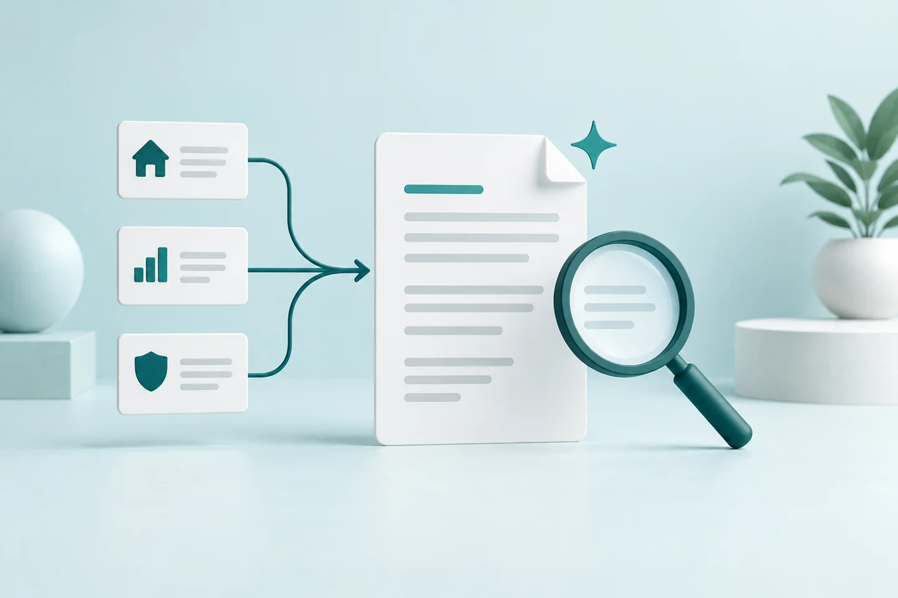
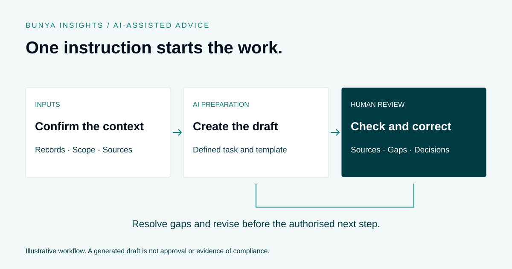

AI & advice
AI Statement of Advice Drafting: Workflow, Checks and Human Review
Look beyond the shortcut to the preparation and review behind the draft.


The inputs do much of the work
A drafting workflow needs relevant, current information. Incomplete records or an ambiguous meeting transcript can leave gaps that an AI-generated draft does not reliably resolve.
Agree the required inputs before the workflow begins. Missing or conflicting information should be surfaced for a person to check rather than treated as a reason to invent an answer.
Define what the AI is preparing
Be precise about the output: a summary, structured notes, a document section or a draft against an agreed template. That makes it easier for reviewers to assess whether the result meets its purpose.
Reusable skills can apply a process and structure. The document types, source systems and tools available depend on the firm’s configured scope.
Make review a real step
Review should check the source material, assumptions, calculations where relevant, and whether the output reflects the intended advice. A polished document is not evidence that those checks have happened.
The authorised professional remains responsible for the decisions and the material used. AI preparation does not establish suitability or compliance.
Evaluate the workflow from start to finish
When reviewing a demonstration, ask to see missing information, a rejected draft and the approval step. Find out what is saved, what can change and how a person stops or corrects the work.
The useful measure is the time and effort needed to reach an appropriately reviewed output, including correction and checking. Speed to the first draft is only one part of that picture.
A worked example: two sources disagree
Imagine a meeting transcript mentions a changed objective, while an older client record still contains the previous objective. This illustrative example tests the workflow around a draft, not the merits of any financial advice.
- Identify the sources. The preparation task makes clear which client records, meeting material and approved instructions it can use.
- Surface the conflict. The discrepancy is flagged for review. The workflow should not silently select one version or fill the gap with a plausible assumption.
- Resolve it with the responsible person. An authorised team member checks the source and determines what confirmation or correction is needed.
- Revise the affected material. Once the inputs are corrected, the draft is updated and checked for inconsistencies elsewhere in the document.
- Approve the next step separately. The firm’s review and authorisation process determines when the material can progress. Generating a new version is not the same as approving it.
A useful demonstration shows this exception as well as a clean example. It should also show what happens when the AI fails to notice the conflict, so the human review does not depend entirely on an automated flag.
What should the team be able to inspect?
| Area | Question to ask |
|---|---|
| Inputs | Which records and documents were used, and are they relevant and current? |
| Missing information | How are gaps, contradictions and uncertain interpretations presented? |
| Draft scope | Is the output a summary, a section or a full draft, and what is excluded? |
| Checking | Who checks facts, calculations where relevant, reasoning and consistency? |
| Changes | Can the reviewer see which version was checked and what changed afterwards? |
| Authorisation | What prevents a draft being mistaken for approved material? |
A checklist for the next AI advice demonstration
- Bring a representative example with sample or appropriately prepared information.
- Ask for a missing-input case, not just a complete file.
- Include two sources that disagree and observe the response.
- Ask the reviewer to reject a draft and request a correction.
- Check what the assistant can read, save or change under different roles.
- Find out which checks are automated and which require a person.
- Confirm where outputs and review records are stored.
- Separate the capabilities demonstrated from those included in your proposed scope.
A smooth demonstration is a starting point. Test the process with your team before relying on it in live client work.
Measure the reviewed output, not just the first draft
For a pilot, compare similar tasks using the existing process and the proposed workflow. Record preparation time, time to first draft, review effort, correction cycles and unresolved issues.
A draft produced quickly may still require substantial checking. Look for improvements across the complete task and examine errors alongside speed. Do not present a small pilot as proof of a guaranteed saving across all advice work.
Agree who evaluates the results and what would justify changing, expanding or stopping the pilot. This creates a more useful decision than a single “seconds to generate” figure.
Common questions
Does one click mean the document can be sent immediately?
No. In the workflow described here, one instruction starts preparation. Review, correction and authorisation remain separate steps before material is used or sent.
Does a reusable skill guarantee the same answer every time?
No. A skill can standardise instructions and output structure, but results still depend on inputs, tools and model behaviour. Test the outputs and keep review responsibilities explicit.
Can AI decide which source is correct?
It may identify a possible conflict, but a plausible interpretation is not confirmation. Have the responsible person resolve material uncertainty using the firm’s process.
Does Bunya include every document workflow shown in a demo?
No assumption should be made from the demonstration alone. The Blueprint defines available document types, skills, integrations and approval points. Explore the Command Centre approval workflow ↗
Further reading on AI governance
ASIC’s Report 798: Beware the gap examines AI use, risk management and governance across a sample of financial services and credit licensees. It provides broader context for reviewing how AI is introduced and supervised; it is not a certification of any product or this workflow.